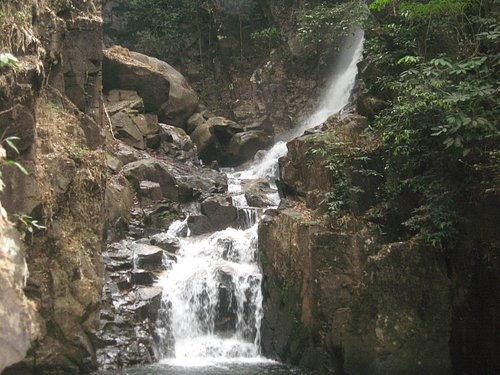

1. น้ำตกพลิ้ว
น้ำตกที่มีความหลากหลายทางชีวภาพของพันธุ์พืชสภาพเป็นป่าดงดิบ หนึ่งในUNSEENที่ห้ามพลาดมาชมฝูงปลาพลวงหินจำนวนเหลือคณานับ
น้ำตกที่มีความหลากหลายทางชีวภาพของพันธุ์พืชสภาพเป็นป่าดงดิบ หนึ่งในUNSEENที่ห้ามพลาดมาชมฝูงปลาพลวงหินจำนวนเหลือคณานับ
จุดชมวิวเนินนางพญา อยู่บนเส้นทางถนนเฉลิมบูรพาชลทิต ซึ่งเป็นถนนเลียบทะเลเมืองจันทบุรี ที่ยาวที่สุดในประเทศไทย ตั้งแต่ชายทะเลด้านเหนือสุดไปยังชายทะเลด้านใต้สุดของจังหวัด เป็นจุดที่สามารถวิวทะเล ถนน โขดหิน สวยงาม บรรยากาศดี มีร้านอาหาร ร้านกาแฟ ห้องน้ำ บริการ
พระอุโบสถอันสุดแสนตระการตาประดับด้วยเซรามิกลวดลายสีน้ำเงินตัดกับสีขาวแบบของเครื่องลายครามในสมัยโบราณ

ที่นี่ถือว่าเป็น สถานที่ศักดิ์สิทธิ์คู่บ้านคู่เมืองจันทบุรี ผู้คนในท้องถิ่นรวมถึงนักเดินทางที่มาเที่ยวจังหวัดนี้ ส่วนใหญ่จะต้องมากราบสักการะศาลสมเด็จพระเจ้าตากสินมหาราช จ.จันทบุรี เพื่อเป็นสิริมงคล รวมถึงเป็นการระลึกถึงพระคุณอันยิ่งใหญ่ของพระองค์ท่านในครั้นอดีต
แนวชายหาดสีเหลืองทองที่สวยขึ้นชื่ออันดับต้นของจันทบุรี เป็นหนึ่งในจุดชมพระอาทิตย์จูบลาขอบฟ้าสวยงามที่สุดของจันทบุรี